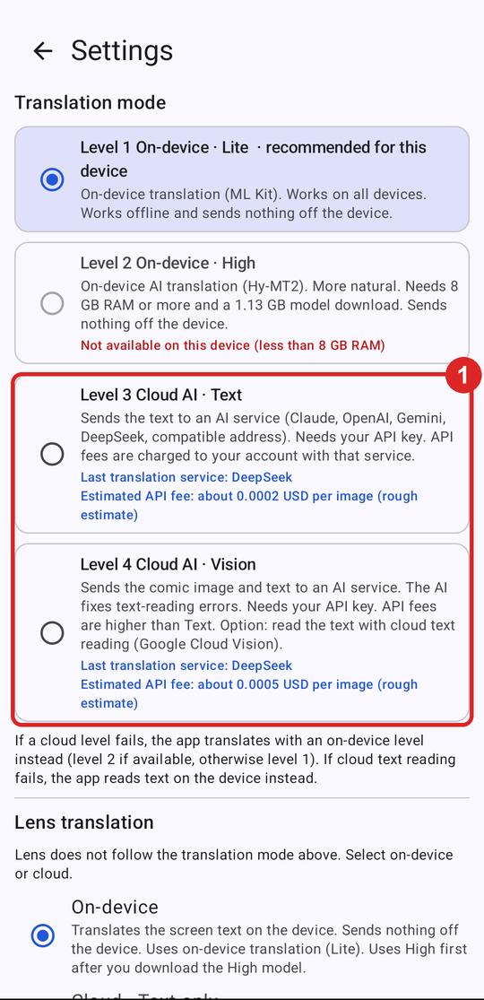
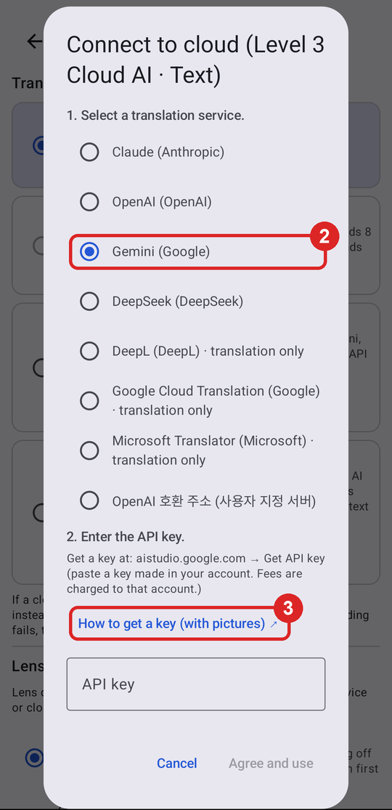
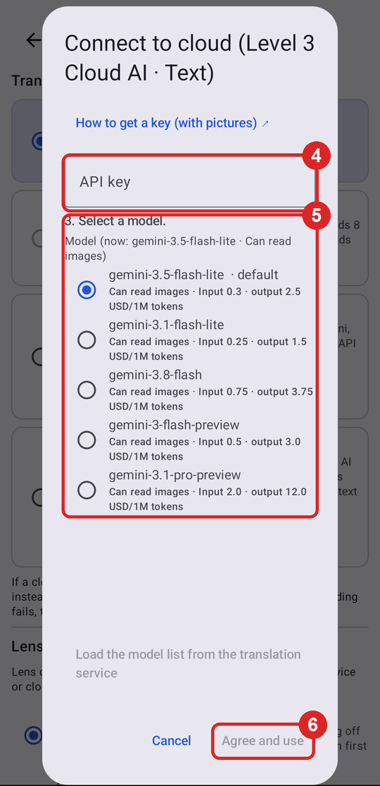

Last updated: 2026-11-01. The steps for each provider follow that provider's official documentation (checked on 2026-11-01). Provider screens and prices can change. Check prices on each provider's page.
Levels 3 and 4 (cloud AI) in ToonLens send requests directly to the provider with your own API key. The developer never receives your key or what you translate. Charges go to the account that created the key.
Keep your key private. Do not show it to anyone or send it by email, chat, or screenshot. A leaked key lets others spend money on your account. If you think a key leaked, delete it on the provider's page right away and create a new one.
Enter the key in ToonLens (same for every provider)
Create a key on the provider's page and copy it (steps below).
In ToonLens, open Settings (gear at the top right). Under "Translation mode" at the top, tap the Level 3 or Level 4 card (picture ①).

① Tap the Level 3 (text) or Level 4 (vision) card
In the "Connect to cloud" window, select the provider (picture ②).
If you do not have a key yet, tap "How to get a key" (picture ③). This page opens at that provider's section.

② Select a provider · ③ How to get a key
Scroll the window up. Long-press the "API key" field and paste the key (picture ④). The key shows as dots.
You can keep the default model (first line) (picture ⑤).
Read the data transfer notice, then tap Agree and use (picture ⑥). The button turns on after you enter a key.

④ Paste the key · ⑤ Model (default) · ⑥ Agree and use
The key is stored encrypted on your device. After you save it, the field does not show it again. To change the key, paste a new key in the same window.
The first time, accept the Terms of Service. This creates a default project.
On the API Keys page, tap Create API key.
If asked for a project, select the default project.
Copy the new key.
Each key belongs to a Google Cloud project. For free usage and prices, see Google's Gemini API pricing page. Google can use content sent on the free tier to improve its services.
In APIs & Services → Library, enable the APIs you need. You must enable an API before you can select it in key restrictions.
Translation API (level 3): Cloud Translation API
Level 4 cloud OCR: Cloud Vision API
In APIs & Services → Credentials, tap Create credentials → API key.
Under API restrictions, select only the APIs you enabled, then save.
Copy the key in the "API key created" window.
A Gemini key (AI Studio) and a Google Cloud key can be different. Enter a translation API key in the "Connect to cloud" window after you select "Google Cloud Translation". Enter a cloud OCR key in Settings → "Advanced: translation services and API keys" → "Google Cloud Vision".
Enter the subscription, resource group, and name. Select Global as the region.
You can select the free pricing tier (F0). Each subscription can have one free tier resource.
Tap Review + Create → Create. When it finishes, tap Go to resource.
In the left pane, under Resource Management, open Keys and Endpoint and copy "KEY 1".
If you created the resource in a region other than Global (for example, koreacentral), enter that region in ToonLens Settings → "Advanced: translation services and API keys" → Microsoft.
Troubleshooting
What you see
Meaning
What to do
401, 403, invalid key
The key is wrong or deleted
Copy and paste the key again. Check for spaces before or after it
402, insufficient balance, credit
No balance or credits
Add funds on the provider's Billing page
429, rate limit, quota
Usage limit reached
Try again later. Raise the limit or use another provider
"Switched to on-device translation"
The cloud request failed
Check the rows above. If it still fails, tell us in Settings → Report a problem